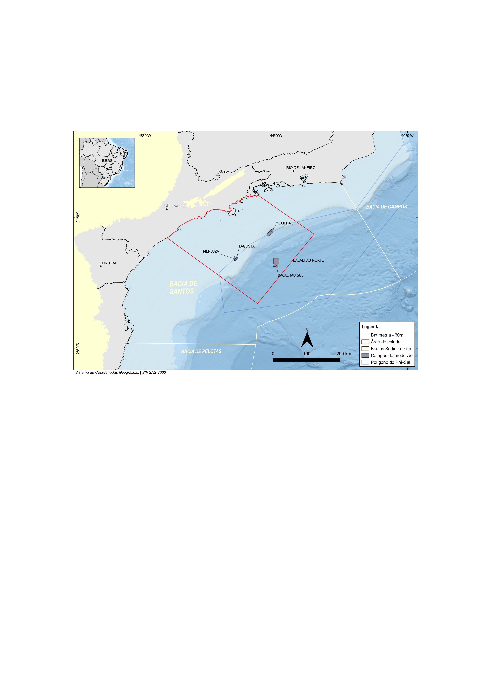

Escolha a superfície:
Topo do Rifte
Topo do Sal
Topo do Albiano
Topo do Santoniano
Topo do Campaniano
Topo do Maastrichtiano
Topo do Eoceno
Topo do Mioceno
Fundo do Mar
Topo do Embasamento Sísmico - Cubo
Topo do Rifte - Cubo
Topo do Sal - Cubo
Topo do Albiano - Cubo
Topo do Santoniano - Cubo
Topo do Campaniano - Cubo
Topo do Maastrichtiano - Cubo
Topo do Eoceno - Cubo
Topo do Mioceno - Cubo
Fundo do Mar- Cubo
Mapa de localização
